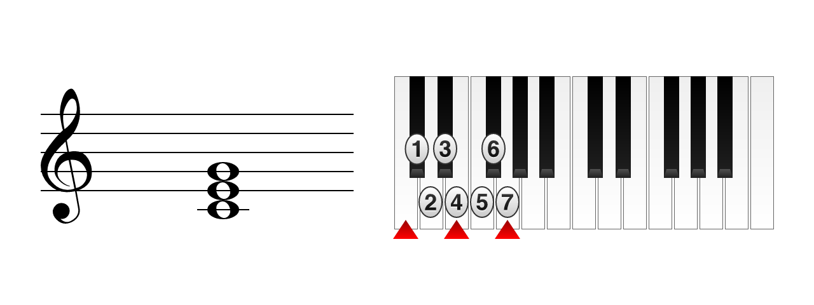
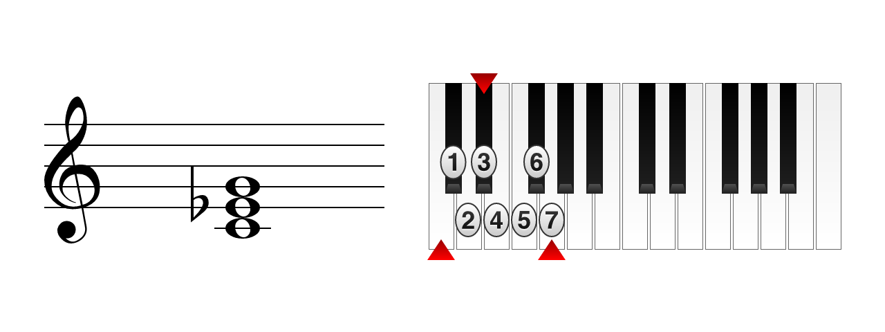
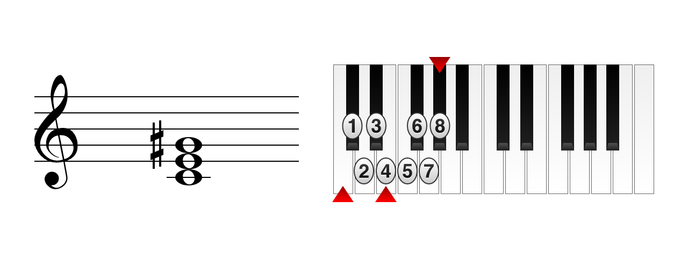

Акорди
Акорд - це комбінація трьох або більше нот. Акорди будуються відносно певної ноти, яка називається тонікою. Далі будемо розглядати акорди, які складаються з трьох нот (тризвуки).
Мажорний тризвук складається з великої терції та квінти:
Мінорний тризвук складається з малої терції та квінти:
Збільшений тризвук складається з двох великих терцій:
Зменшений тризвук складається з двох малих терцій:
Малюнки та теоретичний матеріал: musictheory.net